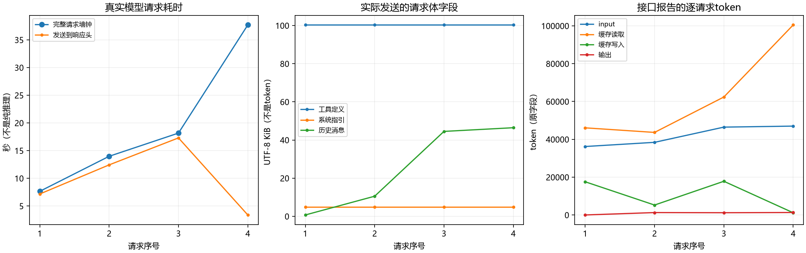
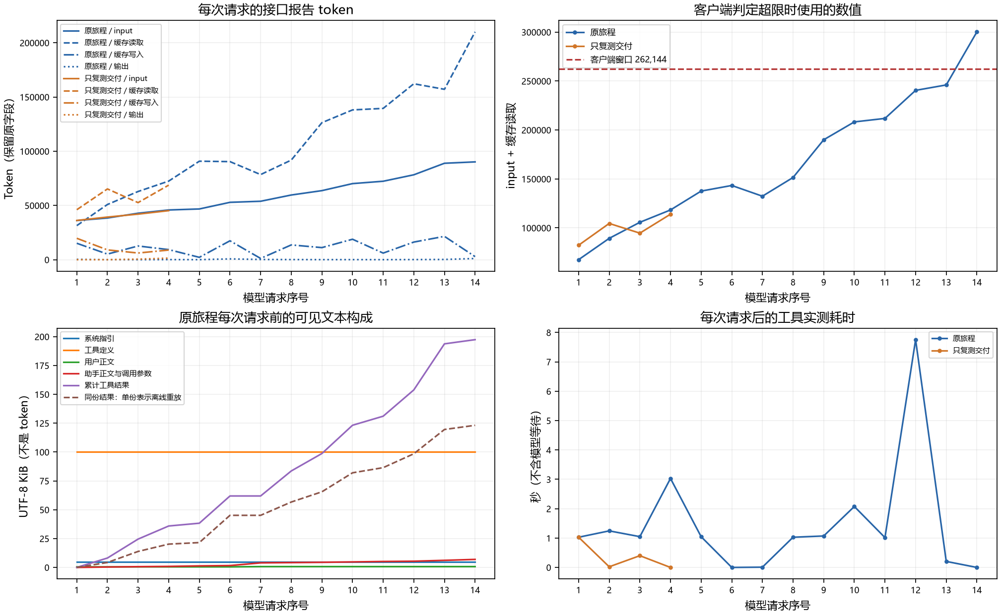
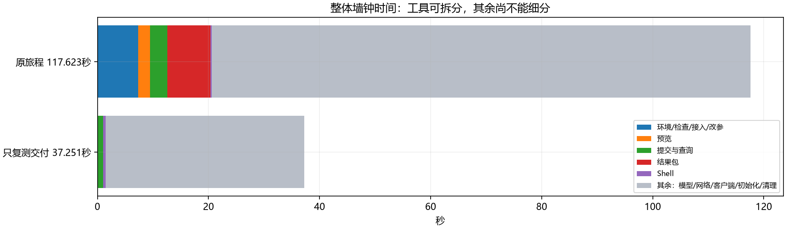

2026-11-21 只读故障与最终交付补测
用户新批20请求/首次请求起6分钟/0次新求解，补断线、下载故障及第三场只读最终交付。实际17请求、约196.9秒，分配8/6/3，0次新求解，预算关闭；未用的3次不续开。隔离服务真实握手与77个完整定义核对通过，宿主安装客户端/只读ZIP检查预检通过。使用已安装DSH组件、受控WSL宿主与NTFS文件，不是桌面GUI/HPC验收。DSH/模型和凭据配置、原作业及原S3宿主文件保持，自有服务及代理清理确认。
| 场景 | 功能与文件实际结果 | 最终答复核对 |
|---|---|---|
| 断线接续 · 8请求 | 真实completed状态回复被代理丢弃、返回503；Agent沿同一job_id重查成功，无新提交，7成员ZIP实际下载，完整通量与原生StatePoint、ZIP成员与服务器字节/SHA一致。 | 状态接续/文件路径通过；附加数值表把原始索引2/4/8/10对应的i=2/3交换，文字验收未通过，文件数据未错。 |
| 下载故障恢复 · 6请求 | 真实下载在offset=16384处分块回复被丢弃、返回503；固定客户端恢复同一transfer_id，只准备一次，7成员ZIP完整保存，最终答复给出完整路径/摘要，无新求解。 | 恢复和交付主任务通过；额外零箱解释提到多群错配，这对本连续能模型无依据，不能当成已诊断原因。 |
| 第三场只读最终交付 · 3请求 | 已有14成员ZIP、回执、实际SHA读回一致，原文件不变，无重复下载或出包；给出完整文件路径、内容、正确原网格范围。 | 明确要求实际密度，但答复未查出，误以原子比组成解释；作业状态回执已有一号材料10.1 g/cm³，实际快照二号0.7 g/cm³。信息完整性未通过。 |
独立SDK原生读回核对表明：S4原始扁平索引2/4/8/10应对应[2,1,1]、[3,1,1]、[2,2,1]、[3,2,1]，模型答复写反i=2/3。MCP本轮返回的值、shape=[6,1,2]、预览原始编号及i方向最快的规则正确，所选结果包/CSV/JSON也正确；错在额外重建的文字表。S3-final只查read_results没有查询job_status.execution_receipt.parameter_changes，不能将漏查说成工具没有密度。原子比组成与g/cm³密度是两项独立条件。
两轮0.23.0实测累计49请求、2小计算：首轮32/约200.1秒、第二轮17/约196.9秒。五类需求都有真实记录，原网格追加和实际文件取回有证据；科学文字对应和必要信息读取仍有错误，不能宣布Agent整体体验或专业验收通过。S3只读短复测不是原中途追加长对话的重跑，原长对话到限缺最终答复的记录保留。本轮不继续调用模型、不改DSH或现有配置。
证据在artifacts/agent-run-delivery-20261121/model-check-final/：授权、预算、两个真实故障事件、公开答复/调用、原生oracle、完整ZIP审计和清理回执。后续若继续改进，应优先让Agent直接引用所选CSV/JSON坐标和值、读取实际作业回执中的物理条件，减少自行编表和以缺少某个查询字段为由停查；这些后续改动本轮未实施。运行代码仍为0.23.0，r2仅补文档证据，保留原包和原失败。
2026-11-21 0.23.0真实Agent预算复测
用户批准32次请求/首次请求起10分钟/最多2次小计算，五场景共享、不设逐场景截断。实际32次、约200.1秒、2个小计算，预算关闭。版本与77个完整工具定义先经真实MCP核对，安装客户端和DSH组件零模型预检通过；DSH/模型凭据配置、原模型和原缓存作业保持，自有服务及代理清理确认。使用已安装DSH组件、受控WSL宿主Shell及NTFS文件，不是DSH桌面GUI或真实HPC验收。
| 场景 | 实际事实 | 结论 |
|---|---|---|
| 直接改参并交付 · 19请求 | 采用组合入口；实际原网格有flux/fission，密度10.5，图/完整数据与StatePoint一致。固定receive命令实际保存10文件ZIP，最终答复给出完整本机路径及校验摘要。仍先准备再重复目标、重复查阅及检查归档。 | 主任务完成；有流程和命名限制 |
| 材料歧义 · 4请求 | 先展示两种材料让用户选；脚本回复一号后才派生，密度10.5，其他XML语义保持，未计算。 | 本次通过 |
| 中途追加 · 9请求 | 先准备不算，追加后组合入口在原网格1实际计算flux/fission，全局2仍只有flux；14文件ZIP实际已保存。额度用尽时没有最终答复。准备答复将y下界-1.2误抄为+1.2，输入/StatePoint仍正确。 | 同网格修复及下载有证据；完整对话交付未完成 |
| 断开接续 | 额度在前3场耗尽，未进入；没有注入该故障。 | 本轮未执行 |
| 下载故障恢复 | 额度在前3场耗尽，未进入；没有注入分块故障。 | 本轮未执行 |
第一场有三次归档检查命令失败：虚构客户端--list-zip参数，以及两次普通Python检查/解压被测试宿主限制拒绝。客户端已成功保存文件，不能把这些限制全部归因于工具包；19请求不是理想宿主的固定成本。测试意图是目标目录，但请求只给出路径、未明确要求目录语义；Agent将其作为无扩展名ZIP文件本身，之后没有实际解压。命名不理想，但不据此否定已完成字节交付。原始调用和限制保留，不能从正常退出推断五场景完成，也不计算普遍成功率。
原生审计还逐项核对两作业每个所选计分的完整均值及误差、两份本机ZIP的全部成员与服务器字节/摘要。S1的两零裂变箱对应此例题的纯水格点有模型结构依据，不将任意模型零值泛化为相同原因。StatePoint以网格宽度重建upper_right出现1.7999999999999996，端点按1e-12相对/1e-14绝对容差比较；实际输入上下界另核对。不把审计时的浮点等价处理冒充新增模型调用。
证据位于artifacts/agent-run-delivery-20261121/model-check/：authorization、budget、原始公开答复/工具记录、native审计、下载回执、配置指纹和服务清理。此前0.22.0的失败保留；0.23.0原网格实际误改问题已有正面证据，但五场景整体仍未验收。该首轮当时的剩余验证随后按新20请求/6分钟/0求解预算补测，见本页“只读故障与最终交付补测”；原32请求额度保持关闭。测试宿主另补只读归档检查并经零模型预检，不将原限制改判为产品失败。
2026-11-21 组合执行与固定下载入口
价值假设：用户要的是“同一网格追加后计算”和拿到文件，现有原子工具虽可完成，多步重新规划却可能改错全局计分；已有续传被拼错命令阻断。不改则原生结果和本机交付仍有缺口。核心价值是系统处理确定性的复制、原网格保留、读回、绑定和文件续传；物理条件、多个网格的选择仍交用户。非目标：改DSH、替代复杂原工具、自动扩大规模、目标HPC部署或专业验收。
组合入口openmc_run_case始终派生新目录，在暂存副本改参并给原网格追加score，保留已有计分/过滤/网格；检查读回后发布，submit=true才按最终指纹绑定提交。多个/没有网格则needs_selection且不写盘。默认准备不计算；旧作业快照不改。相同目标重复调用停止，未知回复按任务名/副本查询原job_id，不重投。宿主客户端统一在host_transfer.py，安装命令mc-agent-tools-transfer及源码兼容入口共享实现；receive只需下载ID和本机目标，自行建目录、分块校验/接续。prepare_download/status返回host_action及明确的local_file_verified=false；客户端实际保存后才为true。
0.23.0工程实现与验证完成：完整发布检查发现696项、668项执行通过、28项可选跳过，关键真实项无跳过；Harness 20项通过。五种真实工具场景、多个网格不写盘及错误全局写入反例通过；原生StatePoint确认原网格1有flux/fission、全局2仍只有flux。Windows隔离安装的固定命令在3次503后沿同一下载编号续传，NTFS文件SHA256通过；新文档章节及完整浏览器旅程通过。证据在artifacts/agent-run-delivery-20261121/。首次测试调用模块路径失败、数值XML -5/-5.0误判、宿主测试变量名和PowerShell策略阻断均保留原记录。数值等价比较修正后完整回归通过；宿主改用已安装可执行文件验证，不改执行策略。源码/归档/解压与远端CI以最终回执核对。
此前0.22.0模型失败/部分/未覆盖原样保留；工程发布阶段模型请求0次；随后批准的32请求实测见本页0.23.0真实Agent复测。新运行代码只在自有隔离服务实测，现有用户服务和DSH未更新；真实HPC、专业物理和合同验收仍待条件。
2026-11-21 四场景Agent补测
仍未证明用户只提需求即可稳定取得完整结果。新增授权24请求/8分钟，实际24请求、约192.9秒（首次请求登记至预算关闭，含工具/网络等），预算已关闭。按5/10/5/4分配四个场景；单场景到分配上限结束不是功能失败证据。与上一轮累计52次模型请求、合计2个小计算，不再追加。使用现有DSH组件和隔离服务0.22.0，模型/凭据配置、原模型及旧结果未改；测试服务与代理清理确认。不是桌面GUI/HPC验收。
| 场景 | 本轮观察 | 结论 |
|---|---|---|
| 材料歧义（5请求） | 先列两种材料及密度并询问，收到一号材料后才派生；XML读回10.5 g/cm³，其他XML语义一致，无计算 | 本次通过 |
| 中途追加（10请求） | 准备阶段没有计算；但新增全局计分2并将fission加到它上，实际计算时原网格计分1仍只有flux，算后才修改网格输入 | 未通过；原生StatePoint确认需求未进入计算，不只是缺最终答复 |
| 断开接续（5请求） | 注入503后重查同一作业，恢复completed，未重算；随后重复单图及结果包，未到本机交付 | 状态接续通过，完整交付未完成 |
| 下载失败恢复（4请求） | 结果包及下载会话已准备；拼接的宿主命令使用不支持的复合命令及错误CLI参数，未发出下载分块 | 未覆盖故障恢复，不能宣称自动续传失败或成功 |
关键偏差：用户要求把裂变率加到同一网格。原生结果里，网格计分1只有flux（6箱），新全局计分2包含flux/fission（无网格过滤）。Agent算后更新副本不等于已有StatePoint新增计分；原快照与结果完整保留，没有用修改后的当前XML冒充实际计算输入。
材料选择已按请求与落盘值独立核对；断线后沿原编号查询也有实际证据。后两项完整交付未在测试分配内完成，下载故障未触发，不能据这些小样估计普遍成功率。另保留一次模型开始前代理健康检查误注入503的测试驱动事件，它未进入模型请求；不混入S4的指定故障。
原始调用、预算、输入指纹、原生结果审计及清理回执位于开发现场artifacts/agent-workflow-20261121/model-check-remaining，不进入公开源码包。原失败与本次结果均保留，程序检查通过不代替Agent行为验收。
后续优先应减少由模型临时拼接的跨步骤决策：把已有网格/计分与改参目标对齐、最终执行条件核对及提交组织成可复用的受控组合；文件交接提供明确可执行入口。该下一轮实现尚未开展，本轮不改DSH、不新增强制审批，也不以追加提示或模型调用凑通过。
0.22.0模型复测与工具验证的边界
五种脚本化需求场景已用真实MCP/OpenMC、原生数值和实际客户端文件核对通过，修改后的客户端又在真实Windows调用组件→WSL桥接→MCP链路中预检通过，预检不调用模型。它证明工具和传输链路，不证明模型会忠实组织操作。
首次模型请求因测试驱动首次计时错误被立即中断；用户确认在原总上限与截止时间内恢复。随后第一场景自行发现参数、派生并计算，但在文件阶段因测试宿主默认Python缺少mcp依赖及Shell能力说明不一致反复尝试。已停止自有模型进程，累计28/36请求，1个小计算；预算关闭，原输入/旧结果/模型配置未改，隔离服务及代理清理确认。该场景没有完成交付，其余四场景未由此执行，不能判为Agent体验通过。
同时观察到无必要的新网格计分、先单独画图再生成结果包及手工读取Base64等绕路；测试环境问题与模型选择均保留，不把全部问题归给模型或用修复后的脚本掩盖旧失败。宿主客户端环境已用零模型请求预检修正；后续是否补测按新预算授权及实际回执记录，不复用关闭额度。未改DSH，未新增宿主展示保证。
0.22.0最终完整发布门禁通过：Python发现694项，666项执行通过、28项可选跳过，关键真实项无跳过；Harness20项通过。首次完整检查因README版本号漏同步而失败，已保留原日志并修正后完整重跑；修改后的客户端五场景及零模型宿主/故障预检另经定向复验。工程通过不改判模型体验或合同验收；源码归档与远端CI以交付回执为准。
0.21.1真实模型交付复测
完整Agent交付仍未通过。使用现有DSH组件和模型配置，隔离服务核对0.21.1及完整76工具定义；不点名MCP或新摘要，要求整理既有作业，允许生成新结果包而不重新求解。授权6请求/5分钟，实际4次、86.922秒，预算关闭，未继续调用。
Agent主动读取结果、生成通量/裂变率两结果包，并用Shell列文件；原生StatePoint核对两个score各6箱均值与标准差一致，文件SHA有效，原输入/结果/模型配置未改，无新求解作业。工具的delivery_summary确实位于模型可见内容，但最终答复继续把CSV/JSON/报告路径缩成省略号；把通量也说成有2个零箱（实际为0，裂变率为2），并确定归因为粒子少/无径迹贡献。原答复和正确产物均保留，不能因为请求正常结束而判通过。

实际发送体108525→155354字节，其中工具定义固定102705字节、系统指引固定5008字节，历史消息721→47550字节。上游usage口径仍未独立核实；单一任务也不能用于普遍性能或采用率结论。逐请求原值。原始调用、答复、审计、文件前后指纹及服务清理回执保留在开发现场artifacts/delivery-model-check-0211-20261120，不随源码包分发。
本轮结论是工具能提供确定事实和可取回文件，仍不能保证Agent忠实引用。已安装DSH的MCP结果经过文本投影交给模型；不能假定加一个协议文件引用就会出现由宿主直接呈现的交付界面。本轮不改宿主、不强制工具路由、不重写失败答复，也不继续追加提示词或预算凑通过。
2026-11-20 真实任务的信息流与交付改进
这次任务为什么会膨胀：工具定义是固定底座，工具返回随后逐轮累积；临时验证程序曾把MCP的文本和结构化结果重复序列化，普通预览还主动索要了完整输入。已修正的单份投影减少重复，但原始记录不能证明所有超限都由重复造成，接口usage的上游统计口径尚未独立核实。
原14请求旅程整体117.623秒，工具合计20.559秒，其余97.064秒包括模型/网络、客户端、初始化和清理，缺少细计时不能都称为推理。4请求交付复测整体37.251秒，工具1.452秒，其余35.799秒。原OpenMC作业记录started→finished约0.203秒，为后台作业生命周期，可能与提交/等待重叠，不能再与墙钟相加；两次是不同任务，不能据此宣布提速。


保留文本重建中，工具定义为102,457字节（约100.1 KiB），系统指引4,774字节；第14次请求前工具结果累计202,121字节，单份投影加同一24,000 UTF-16代码单元上限后为126,122字节，减少37.6%。第5次请求后的全文预览原有183,863字符，旧程序实际仅发送截断的24,000字符和标记，不能把全文体量冒充已送入上下文。可见正文/Schema、思考内容、提供商包装及token是不同口径。
最后一响应的接口字段input=90,175、cacheRead=210,016，客户端按二者之和300,191与262,144窗口比较而判超限。缓存读取仍属于该客户端判断所用上下文；不能把缓存量全当新增生成或费用。14次累计usage.total=2,499,003是重复读取历史在内的接口报告总和，不是单次窗口，更不是账单；4次总和441,270。没有单价/usage权威口径，未估算费用。不能从字节图反推各部分精确token，也不能证明上游实际拒绝。
逐请求原值与复现方法
| 请求 | input | cacheRead | cacheWrite | output | 客户端相加值 | 工具秒 |
|---|---|---|---|---|---|---|
| 1 | 36093 | 31430 | 15155 | 297 | 67523 | 1.028 |
| 2 | 38442 | 50886 | 5167 | 45 | 89328 | 1.245 |
| 3 | 42846 | 62870 | 12636 | 32 | 105716 | 1.048 |
| 4 | 45852 | 72475 | 9304 | 95 | 118327 | 3.030 |
| 5 | 46775 | 90814 | 2181 | 45 | 137589 | 1.047 |
| 6 | 52897 | 90433 | 17425 | 737 | 143330 | 0.000 |
| 7 | 53884 | 78482 | 1166 | 206 | 132366 | 0.009 |
| 8 | 59641 | 91835 | 13626 | 121 | 151476 | 1.028 |
| 9 | 63674 | 126324 | 11145 | 62 | 189998 | 1.071 |
| 10 | 70155 | 138105 | 18873 | 74 | 208260 | 2.075 |
| 11 | 72337 | 139495 | 6085 | 35 | 211832 | 1.017 |
| 12 | 78279 | 162205 | 16256 | 118 | 240484 | 7.756 |
| 13 | 88911 | 157107 | 21518 | 215 | 246018 | 0.205 |
| 14 | 90175 | 210016 | 2829 | 1117 | 300191 | 0.000 |
完整两次逐轮数值、可见体量、分工具耗时、可观测时间间隔及原文件SHA256见机器可读计量。原始证据保留在本机artifacts/execution-preview-experience-20261120及execution-preview-final-delivery-20261120；分析与核对在artifacts/flow-observability-delivery-20261120。源码包不包含这些原始运行资料。
python scripts/analyze-host-flow.py --source-root /已有证据/artifacts --output /新的分析目录脚本只读保留的C-result、C-visibility、C-task、C.json及budget，输出JSON/CSV与两张图，绘图需要Matplotlib与可用中文字体；可通过--font指定字体文件，未找到字体会明确报错，不生成缺字图。当前模型usage未按工具定义/历史/返回细分；保留记录不含完整思考/请求包装，客户端也没有逐轮请求起止，工具为空的两轮不能拆出纯模型时间。本轮13个MCP结果的序列化字符数与此前DSH原生投影离线记录逐项一致；没有模型网络调用。
让算完的结果可以直接交付
现有openmc_generate_result_bundle增加delivery_summary和delivery_file：按实际选择给出完整服务器文件路径、原始flux/fission单位、归一化、来源SHA256和原警告，保存为同文delivery.md并进入原子发布、指纹清单和MCP文件下载。不重算、保留原工具；未知计分单位明确未定义，不从名称猜测，不把零值写成已知物理原因。
摘要会额外增加少量响应文本，代价换取不必再翻多份文件拼交付事实；不声称已经减少模型请求或token，也不保证模型一定引用、宿主会展示或文件已下载。Skill提示优先引用，真正的Agent效果仍未复测。
定向现有作业回放4项通过：flux网格、fission网格、所选series的完整路径/警告/原始单位、清单SHA和实际MCP下载字节一致，以及未知单位不臆造。原StatePoint与输入、原始证据未改，没有新job；旧实现同用例因缺交付摘要失败。首次新检查误把单文件下载当ZIP，按现有契约修正后通过，原失败保留；另一次既有兼容用例在隔离目录运行了小算例，不是重算原作业。最终发布门禁：Python 657项通过、28项可选跳过，关键真实项无skip；Harness 20项通过。首次隔离环境未带核数据缓存造成CE/官方例题前置失败，保留中断和失败日志；物理复制既有核数据到测试树后两条路径定向通过，再完成最终门禁。最终归档与解压验证以本轮交付回执为准，未调用真实模型、未动现有服务或模型配置。
2026-11-04确认方向 · 滚动计划
交付能接模型、能建模的MCP调试包
不到两周内供甲方接入调试：既能使用已有OpenMC模型，也能让宿主模型通过标准MCP组合建模、校核和计算。公开例题跑通只是基础条件；可运行范围、可修改范围和可生成范围分别说明。
两个入口，共用一条计算链
既有模型不经过受限生成器重建；保留其原生几何、材料、源、计分及其他合法输入。新建模型先开放明确的材料、CSG曲面与栅元、宇宙、矩形格架、源和计分组合；不能表达的字段应拒绝并说明原生Python/XML接入办法，不能静默忽略。工具不执行调用方任意Python或shell代码。
自然语言理解由宿主承接，工具包独立提供可发现的参数和执行能力；这一工程路径不替代RF004“基于微调后的大模型”的合同要求。微调模型、数据、运行条件和效果证据仍需落实提供方及负责人。
具体补哪些接口
| 合同关联 / 接口 | 输入与输出 | 本期工作与完成检查 |
|---|---|---|
RF001/004/005openmc_model_capabilities | 空对象 → 当前建模Schema、单位、枚举、组合规则、明确限制；完整示例随包 | Schema与执行校验同源；宿主可从工具发现获得完整嵌套字段；不依赖固定例题ID。 |
RF001/004/005openmc_build_model | 新目录、结构化模型 → XML、模型描述、可重跑Python构建源码、指纹与API读回 | 通过官方Python API生成；支持组合而非只选择模板；错误引用、循环、重复ID及不支持字段拒绝；验证成功后发布新目录，不覆盖原模型。 |
RF005/006/009openmc_import_model | 工作区内源目录、新目标目录 → 原生输入副本、校验、文件及依赖说明 | 接入不在例题清单中的分XML/综合model.xml；保留陌生合法内容和原文件；引用缺失、越界及符号链接有定位；不执行自带脚本。 |
RF006openmc_submit_job 增加 nameopenmc_list_jobs | 模型、用户任务名、线程 → job_id；按名字/状态查询 → 匹配列表 | 名称持久化，状态可读；重名保留不同ID不暗选；历史无名称记录兼容，查询不触发重算。 |
| RF001/008 复用 openmc_list_parameters / openmc_prepare_case / 扫描接口 | 当前模型 → 可调字段、单位与值；参数修改 → 独立副本及读回差异 | 本轮先验证新组合模型接入现有改参链。后续按组件/控制棒等实际语义补材料成分、格架节距与关联几何；不把底层曲面系数自动称为完整部件级参数化。 |
| RF005/006 复用预览、校核、状态和取消 | 模型/任务 → 实际输入内容、分层校核、日志、进度和终态 | 核对预览与提交快照指纹；结构、语义、抽样几何检查分层报告；50MiB日志上限和截断标记保留。 |
| RF009/010/011 复用结果提取、对比、网格图和报告 | 实际任务、计分与筛选 → keff/通量/反应率统计、图、完整数据、报告 | 原生StatePoint对照均值/标准差/网格坐标，图表报告同源；说明原始计分归一化，不凭空称功率或物理准确率达标。 |
RF004openmc_generate_inputs（拟定，未实现） | 需求描述、已确认专业参数、管理员模型profile → 结构化模型、缺失项、来源及输入预览 | 沿本轮结构化生成与校核接入微调模型，参数不足则返回待补信息、不猜物理值。先用受控响应测输入约束与失败，真实模型/质量验证另记；不以宿主编排替代本项。 |
RF007openmc_submit_hpc_jobopenmc_hpc_job_statusopenmc_cancel_hpc_jobopenmc_collect_hpc_artifacts（拟定，未实现） | 管理员集群profile、算例、资源 → 调度ID、真实状态、日志与结果位置 | 选一种实际调度器后封装，先做命令构造、状态映射、重复提交/未知结果处理的模拟测试。只用profile引用凭据；真实集群通过后才标真实联调完成。 |
不到两周内怎样推进
- 先完成接口与真实短流程。结构化建模、原生模型导入、任务名称与检索、CLI/MCP注册及示例同步落地。用非预置组合和矩形格架运行，不等甲方样例。
- 随后补堆相关使用深度。实际运行已有公开17×17组件与简化全堆，记录资源、统计设置、失败和结果；全堆模板生成不算计算完成。按操作反馈补部件参数表达、空间计分和对比说明。
- 并行落实HPC与生成模型条件。完成调度器/profile设计及可独立测试的适配，条件到位立即联调；模型提供方未定时先做生成接口与约束验证，不称微调已完成。
- 最后几天冻结新功能，交给下游调试。独立解压/安装验证、标准MCP接入、正常与失败恢复、产物交接和问题回执。真实自然语言测试在明确宿主、模型和预算后执行，未执行就明确列缺口。
不把44条内部改进全部压入本期。LHS、交互式图、向量库、MCP prompts/elicitation、常驻worker及全面XML重构暂缓；CAD复杂件与燃耗专项按既有能力保留，除非甲方明确近期优先。CLEAR-S、RF004微调生成、原准确率与两宿主/多模型/72小时等要求继续保留在合同进展表，不因暂缓增强项而降低。
怎么证明可交给下游调试
| 测试层次 | 具体行为与证据 | 不能据此声称什么 |
|---|---|---|
| 离线契约/异常 | Schema非法字段、单位/尺寸/引用错误、循环、NaN、路径越界、符号链接、重名查询、旧记录、失败不覆盖有效输入。 | 不证明真实求解、领域正确性。 |
| 真实OpenMC | 自建CSG/格架模型→Python生成XML→原生API读回→校核→真实计算；独立目录重跑生成源码；已有非目录模型导入、改参和重算。原输入不变，实际输入、结果和产物可关联。 | 短运行和内部统计比较不等于收敛或合同≥90%物理指标。 |
| 结果内容 | StatePoint独立读取，对比keff、tally均值/标准差/坐标和完整CSV，检查图与报告选择一致；保留不可用值和统计警告。 | 报告生成成功不等于数据或专业结论正确。 |
| 标准MCP | 实际启动隔离服务，发现完整参数、调用建模/导入/命名计算/查询/结果接口；错误响应可定位。CLI与协议调用共用实现。 | 无模型的MCP客户端不算自然语言宿主端到端通过，也不算第二宿主。 |
| 自然语言与目标部署 | 明确预算后在实际宿主中提出不照抄固定demo的任务；观察模型生成的参数、实际工具回执、终态和结果。目标环境安装与甲方样例另留记录。 | 未拿到预算、环境或样例的项目记待验证，不能用模拟或本机证据填成通过。 |
沿用 ./verify.sh --tools-only，真实引擎用 MC_TEST_OPENMC_CONFIG 显式启用；具体命令与证据见模型工作流说明。当前测试默认跳过的真实门控不计为通过。源码包不含凭据、核数据和运行环境；首次环境准备后自包含使用的约束保持不变。
需要甲方配合什么，哪些我们自己做
| 条件 | 需要配合 / 项目内落实 | 未取得时继续做什么 |
|---|---|---|
| 近期领域任务 | 一个代表性堆/组件模型或参数说明、要修改的量、要查看的输出；确认联系人。不是要求先提供完整业务包。 | 按合同组件/控制棒方向和公开模型开发，明确候选范围；不宣称它就是甲方业务模型。 |
| HPC和部署 | 调度器、网络/操作系统、账号授权、认证方式、分区/资源、OpenMC/MPI/核数据路径及产物交接方式。 | 先做profile和模拟调度；凭据留在服务器受控配置/代理，不能作为MCP参数或写日志。非交互密码/MFA策略按环境确认。 |
| 微调模型 | 项目明确模型、数据、运行资源、接入方式和提供方；不能直接把全部责任默认转给甲方。 | 完成结构化约束、模型生成/校核接口和受控错误反馈，宿主调用工程测试单独举证。 |
| 专业验收 | CLEAR-S等指定基准、17×17相关测试集、参考值、专业容差、95%/90%统计口径及测试计划确认。 | 建立并复用公开自测与比对机制；内部判据不升级为合同条款。 |
2026-11-04补充：对用户的确认入口已压缩为交付总览，本页保留实施细节。Windows DSH接入单独提供配置。存储报告增加磁盘容量，作业快照提交前检查输入估算量和可配置保留空间，不自动删除旧证据；不是运行中配额，也不覆盖所有写入路径。WSL部署可通过disk_space_check_paths显式加入虚拟磁盘所在的宿主卷检测路径；默认空列表，通用包不绑定Windows路径。
本轮状态与下一步
第一批已实现：组合建模与能力发现、原生模型导入、作业/扫描命名、按名查询、声明式改参后源码/XML一致性、失败保全，以及调用示例和手册。非预置格架、真实MCP流程和简化全堆短计算已留工程记录；最终检查数量与版本见本轮回执。HPC、微调生成、部件级语义深化与目标环境联调继续按上文推进；真实自然语言模型联调按用户决定本轮暂不执行。
产物本期继续保存在服务端，返回绝对路径和清单；MCP不自动上传输入，也不自动下载输出。下游需先将模型放入服务器工作区，按部署约定取回产物，远程下载功能仍按先前决定暂缓。
0.24.0：坐标配对与提交密度修复记录
原0.23.0真实Agent补测保留失败判定：S4最终答复有4处网格箱与值错配，S3最终交付复测漏查明确请求的密度。StatePoint和原结果文件本身正确。本轮只改工具包和Agent工作流：逐值行绑定原生过滤箱/核素/score/统计值；提交材料声明按输入指纹核实，结果包直接给可引用值表和材料密度。
原生SDK覆盖多score、多核素及两种过滤器顺序，96行与Tally.get_values独立对照；交换坐标的负例应失败。真实保留作业通过隔离MCP重放，表格与原始oracle及实际下载一致，材料1为10.1 g/cm3、材料2为0.7 g/cm3。独立复核发现EnergyFunctionFilter无bins兼容回归，已修复并用SDK复测；新行只给网格分箱，不扩张为变换后物理中心的承诺。
完整发布检查通过：Python发现700项，672项通过、28项可选跳过；关键真实检查无跳过，Harness 20项通过。本轮工程检查不调用真实模型；后续真实Agent定向复测见下述独立记录。不改DSH、现有服务、模型配置；旧预算和旧失败记录保留。工程通过不等于专业物理/HPC或正式合同验收。
真实Agent定向复测已完成：在Windows已安装DSH调用组件与隔离MCP服务上，直接读网格2次请求、已有成果密度交付4次、断线接续交付6次，合计12次、144.805秒、0次新求解。三个最终答复共18行网格坐标/均值/标准差均按显示精度核对正确；两处明确要求的材料密度均回答10.1与0.7 g/cm³。真实状态回复200被受控丢弃后，沿原作业接续，7文件ZIP实际取回并核对指纹；原输入/StatePoint及旧成果未变，配置未变，服务和代理已清理。
这只判定网格配对与密度两项修复目标通过，不是整段科学解释或五场景全量重新验收：密度场景另把total误称score，原生字段应为nuclide；只说per-source归一化，没有逐项写particle-cm/source和reactions/source；直接读表场景把源收敛“未验证”说成系统偏差“未消除”。这些额外问题单列保留，旧0.23.0失败记录不改判。实际DSH Desktop界面、真实HPC和专业物理验收仍未证明。20次/6分钟新预算已关闭，剩余8次未使用；此前预算未恢复。
0.24.1：术语、单位与源收敛说明
用户问“这个值是什么、用什么单位、能否判断收敛”时，结果查询、结果包与所选报告共用result_summary/result_interpretation。score表示计分类型，nuclide表示核素/汇总范围；nuclide=total是所有核素汇总，而真实scores中出现的score=total仍是合法的总反应计分。
配对数值行附raw_unit，最终答复逐score保留单位：普通flux是particle-cm/source（未除体积），fission及total总反应是reactions/source，不是每秒物理量。响应加权、导数和微观反应结果不套普通单位，未知单位明确待核实；原值与合法输入保留。依据为随包OpenMC 0.16官方手册usersguide/tallies.rst。
批次设置只作低统计风险提示：源收敛未验证，不能由阈值或相对σ判断已收敛/未收敛，也不能判断系统偏差存在、已消除或大小。固定源不适用本征值源收敛判定。工具未新增收敛诊断、自动扩大计算或专业验收。真实Agent复测待新预算，工程结果不替代最终答复验收；本轮不改DSH与现有配置。
本轮完整发布检查：Python发现704项，676项通过、28项可选跳过；关键真实检查无跳过，Harness 20项通过。原生SDK与既有作业隔离MCP回放通过，错误单位和旧源偏差断言的负例被检出。实际模型尝试见下述终态；工程通过不代表真实Agent答复通过。
最新定向终态：原三项解释修复目标通过，三个场景已执行；不是整段最终答复全部通过。复用已安装DSH组件的正常启动代理链后，接口探测1次、网格查询2次、已有成果交付2次、断线接续8次，合计13次/112.238秒/0次新求解。40次/12分钟预算已关闭，剩余27次未用。三个答复未混淆score/nuclide，所展示flux/fission单位明确，源收敛只表述未验证；grid/recovery共12行坐标/均值/标准差按显示精度与原生oracle一致，density/recovery两处密度10.1与0.7 g/cm³正确。
断线场景实际丢弃一次openmc_job_status的HTTP200回复并返回503；Agent重查同一作业，没有重投。实际恢复ZIP共8文件、234084字节，SHA256为d09d00c34e2344c09199f31e7e986d220528e3f11c0adfccb37c24e6690c086f；manifest和源输入/StatePoint指纹独立核验通过。原作业/旧成果/现有模型配置及用户.env未变，服务与代理已清理。测试通过配置现有代理只影响私有进程，未改DSH源码或配置，也未要求用户手动补测。
仍保留的非目标观察：网格答复标题“原始计分未归一化”过宽，正文有每源及未工程换算限定；已有成果答复读到旧服务端local_file_verified:false后未重新哈希，不能冒充已做本轮本机校验；恢复答复将路径排成目录树、SHA只给前缀，不能冒充已提供可复制单行完整路径及完整SHA。实际文件已由宿主客户端取回并由本任务独立核实，但整体交付措辞与全部科学解释不因此一律通过。DSH Desktop GUI、真实HPC和专业验收仍未证明。
早先三次直连超时的解释已修正：私有测试启动脚本漏加载DSH原有launch-environment/http-proxy组件及用户.env代理层，不是已证实的DSH或上游接口故障。按已安装启动器原逻辑补齐后，无鉴权HEAD返回200/1113ms，0模型MCP预检通过，再以新预算完成上述真实场景。旧请求仍计数，0.24.1各轮累计16次；旧失败和预算记录保留。
早期错误启动链的超时记录（历史，不能代表正常DSH链路）
真实Agent尝试终态（未通过业务验收）：第一轮20次/6分钟额度实际1次请求约10.8秒超时，无答复；后续用户授权翻倍，新一轮40次/12分钟额度中，两个378字节最小接口探测连续TIMEOUT，实际2次/21.568秒，按已报告停止条件结束。两轮合计3次模型请求，均无答复或业务工具调用，0次新求解；三个业务场景尚未进入，术语/单位/源收敛的最终答复遵循仍未验证。所有额度已关闭，不沿用余额。
不调用模型的连接诊断：DNS和TCP可连，独立Node与DSH Node的TLS握手曾超时，随后Node与Windows握手成功；这只证明后续握手可用，不证明模型接口已能响应，也不能据此判断超时发生在服务端还是链路。未改DSH、现有配置或模型选择，原作业/旧成果未变；隔离服务与代理已清理。首个离线预检另发现测试客户端shebang指向已清理的临时环境，仅重装私有客户端前缀后修复，预检未调用模型。后续需确认接口响应恢复并另获新测试预算。